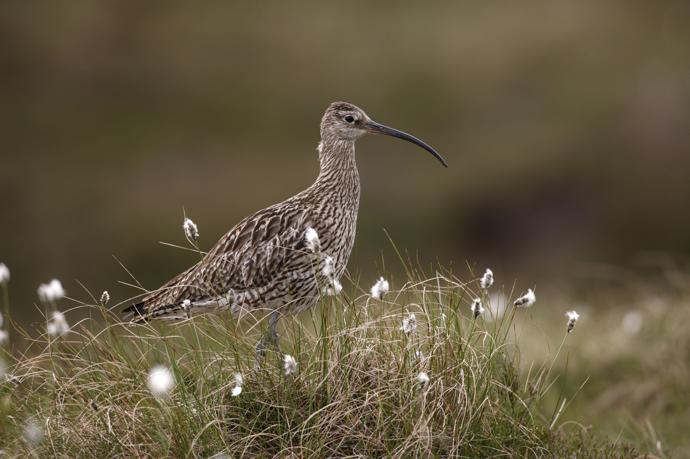

Local Wildlife

The holiday site is situated in the borders of the Northumberland National Park, s the least populated of the UK’s
National Parks, nature has space to breathe here.
Keep your eyes open bird watching out and about and at one of the plentiful local nature reserves. You might be lucky enough to see
some rare wildlife, like the black grouse and otter. The unique countryside includes enchanting hay meadows, wild moorland,
unique peat bogs and beguiling ancient woodlands.
The landscape and rivers carve a place in geology and visitors’ hearts alike. Don’t forget your binoculars or camera.